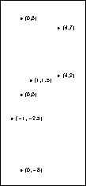

Some portions of your TeX source may be explicitly
images, or text that is particularly resistant to
conversion to HTML. Examples are JPEGs from digital cameras, encapsulated
PostScript inserts, mathematics, and the LaTeX
{picture} environment. TeX2page embeds these as images in the HTML
output.
Math is typically text between $...$ (in-text
math) and $$...$$ (displayed math). Here are some
samples of mathematics with TeX:
$$ F = G {m_1 m_2 \over r^2 } $$
$$ \int_0^\infty { t - ib \over t^2 + b^2} e^{iat}\,dt =
e^{ab} E_1(ab), \qquad a, b > 0 $$
$$ A =
\left(
\matrix{ x - \lambda & 1 & 0 \cr
0 & x - \lambda & 1 \cr
0 & 0 & x - \lambda \cr}
\right) $$
These produce, respectively:
In-text mathematics is also available. E.g.,
The Euclidean distance between two points is
$\sqrt{ (\Delta x)^2 + (\Delta y)^2 }$.
produces
The Euclidean distance between two points is √( (Δx)2 + (Δy)2 ).
You can control whether your math displays should
be specified as image or text with the
flag \TZPmathtext
(p. 6).
With \let\TZPmathtext=1,
the three examples above
look as follows:
|
|
|
Encapsulated PostScript files (EPS) are a convenient and popular way to insert pictures (graphics) into TeX documents [17]. Users create EPS files with their favorite external programs, which can be GUI tools such as Inkscape [24, 26, 2], GIMP [15, 38], and Xfig [51], or algebraic ones like MetaPost [20, 27].
However it is created, an EPS file is typically inserted as a TeX box into a TeX document with calls like
\epsfbox{ eps-file}
\includegraphics{ eps-file}
These are commands defined external to plain TeX or LaTeX.
Plain TeX
documents using \epsfbox must load the standard
macro file called epsf.tex.
LaTeX documents using \epsfbox can do the
same, or they can load the epsfig.sty package.
\includegraphics is a generic graphics includer that tackles more than
EPS files, based on file extension. Thus, if your file has a
nonstandard extension, you
will have to inform \includegraphics of this using directives like the
following:
\DeclareGraphicsRule{.1}{mps}{*}{}
This states that files with extension .1 are to be treated as EPS
files generated by MetaPost.
\includegraphics is defined in the LaTeX package graphicx.sty,
which can also be loaded by
plain-TeX documents with the help of miniltx.tex, as we saw
with color.sty on p. 4.1
\input miniltx \input graphicx.sty \resetatcatcode
For \epsfbox, you can specify the desired image
width and height by assigning to the dimen
registers \epsfxsize and \epsfysize
(specifying only one of them will cause the other to
change as well, maintaining the image’s aspect ratio).
TeX2page will respect such sizes, equating one browser
pixel to one point (= 1/72.27 inch). Thus,
\epsfxsize=1.5in
sets the width of an immediately following \epsfboxed image to
1.5 ×72.27 ≈108
pixels.
\epsfxsize and
\epsfysize are cleared after each
\epsfbox.
If you use pdfTeX or luaTeX (which produce PDF
instead of DVI output), you can insert
MetaPost-created EPS files with the
\convertMPtoPDF command:
\convertMPtoPDF{ eps-file}{1}{1}
\convertMPtoPDF is defined in the macro file
supp‑pdf.tex of the ConTeXt package,
which is included in most modern distributions of TeX.
Caveat: \convertMPtoPDF doesn’t work for EPS files
that weren’t made using MetaPost!
pdfTeX can import common graphics formats
such PNG and JPEG: Either use \includegraphics, or a primitive call
such as
\pdfximage height 1.5in {pic.png}\pdfrefximage\pdflastxmimage
TeX2page recognizes the scaling information supplied with \pdfximage
and \includegraphics, with one browser pixel
equated to one point. Unlike EPS files, PNG and JPEG images are directly
supported by HTML, so TeX2page does not need to convert them.
XǝTeX has its own duo of graphics-insertion commands:
\XeTeXpdffile for PDF images, and \XeTeXpicfile for
JPEG and GIF images. E.g.,
\centerline{\XeTeXpicfile tbdek.jpg width 3in \relax}
for
There are two ways to load a graphic specified in MetaPost:
(i) You can have MetaPost convert the spec to EPS, and
then use a utility like epstopdf to convert the EPS to PDF.
Let’s start with a MetaPost file
lambda.mp. At the OS shell, type:
mpost lambda.mp epstopdf lambda-1.eps
This creates a PDF file lambda‑1.pdf, which is inserted in
the source document via
\centerline{\XeTeXpdffile lambda-1.pdf }
to obtain2
(ii) Alternatively, you can have MetaPost directly convert
the spec to
PNG. In lambda.mp, change the outputformat setting to png,
i.e.,
outputformat := "png";
Metapost will directly produce the file lambda‑1.png, which
can be inserted with
\XeTeXpicfile lambda-1.png
You may explicitly request any part at all of your TeX
document — not just its math or EPS inserts —
to be converted into images for your HTML output. The
fragment of the document to be converted to image is
given as an \makehtmlimage argument.
Here’s an example TeX-based diagram from
The TeXbook [28, p. 389]:
\makehtmlimage{
\newdimen\unit
\def\point#1 #2 {\rlap{\kern#1\unit
\raise#2\unit\hbox{$
\scriptstyle\bullet\;(#1,#2)$}}}
\unit=\baselineskip
\centerline{\vtop{\hrule
\hbox{\vrule height10\unit depth9.4\unit \kern2\unit
\hbox{%
\point 0 0 % Alioth (Epsilon Ursae Majoris), mag 1.79
\point 0 8 % Dubhe (Alpha Ursae Majoris), mag 1.81
\point 0 -8 % Alkaid (Eta Ursae Majoris), mag 1.87
\point -1 -2.5 % Mizar (Zeta Ursae Majoris), mag 2.26
\point 4 7 % Merak (Beta Ursae Majoris), mag 2.37
\point 4 2 % Phekda (Gamma Ursae Majoris), mag 2.44
\point 1 1.5 % Megrez (Delta Ursae Majoris), mag 3.30
}% Src: Atlas of the Universe; Astronomy Data Book
\kern7\unit \vrule}\hrule}}
}
This produces the image:

\makehtmlimage’s argument is a group containing
no unmatched braces.
When converting math, EPS, and other implicit or
explicit \htmlimages into images for HTML, TeX2page
extracts the small fragment of the TeX document
containing the would-be image into a separate, smaller
TeX file. The content of this auxiliary TeX file is
then cajoled by a bevy of external programs into
an image file suitable for HTML (p. 6). This demands that
all the TeX code within the auxiliary TeX file be
self-sufficient. However, it is quite possible that
such TeX fragments contain references to macros
defined elsewhere in the larger document.
TeX2page therefore provides the \imgpreamble
... \endimgpreamble environment, into which
are placed all the definitions that are necessary for
the HTML images. For example, the “image preamble”
\ifx\shipout\UnDeFiNeD % HTML only
\imgpreamble
\input some-pic-macs
\let\gO\Omega
\def\I#1#2{\int_{#1}^#2}
\endimgpreamble
\fi
allows the use of the control sequences \gO,
\I, and those in some‑pic‑macs.tex in the
TeX fragments destined for imagehood.
The commands inside \imgpreamble are visible only
to TeX2page, so a form of them should also be
specified outside the \imgpreamble for use by TeX
when it processes the entire document for DVI.
Note that if you use encapsulated PostScript inserts,
it is not necessary (though it doesn’t hurt) to
specify an image preamble for loading the epsf.tex
macro file or graphicx.sty package. TeX2page will
automatically load them when processing the EPS files.
You still need to load these files outside the image
preamble for your document to be processable by TeX
though.
In general, the magnification of the image inserts, whether math or picture, may not match that of the rest of the text in the HTML output. The DVI output has no such problem, because the math and the picture-macros use the same magnification as the surrounding text. In the HTML output, however, the regular text is rendered at the default magnification of your browser, while the images have come via TeX, and the twain may not meet. Typically, the image is too small.
The solution is to adjust the magnification of just
the image inserts. In plain TeX, this can be
done by a call to the \magnification command
inside the image preamble. E.g.,
\ifx\shipout\UnDeFiNeD
\imgpreamble
\magnification\magstep1
...
\endimgpreamble
\fi
The above will magnify the HTML math and pictures.
Note that it will not affect the magnification
of these same items in the DVI output. Indeed,
you can specify an alternate \magnification
outside \imgpreamble, and that will affect
overall size of the entire DVI output, inclusive of
math and pictures, as advertised in The TeXbook
[28].
In sum: \magnification, when called
outside the \imgpreamble, magnifies the
entire DVI document. When called inside
the \imgpreamble, it will magnify just the
images in the HTML document. These two uses
of \magnification will not interfere.
LaTeX users can use the following:
\ifx\shipout\UnDeFiNeD
\imgpreamble
\let\LaTeXdocument\document
\def\document{\LaTeXdocument\Large}
\endimgpreamble
\fi
This tacks a hook on to the \document command.
(This modified \document will only operate
on the image.)
\definitions that use math (such as the following
one for \um) work as expected in the
HTML output.
\def\um{$\mu$m}
The human eye can see electromagnetic wavelengths from 0.39 \um\
to 0.78 \um.
produces
The human eye can see electromagnetic wavelengths from 0.39 to 0.78 .
This could3 force every occurrence
of \um in the document to generate a brand new
image file. To advise TeX2page to reuse
the same image for these multiple occurrences, use
\imgdef for the HTML:
\ifx\shipout\UnDeFiNeD % HTML only
\imgdef\um{$\mu$m}
\else
\def\ohm{$\mu$m}
\fi
The conversion of TeX fragments into images can consume a lot of time. TeX2page will therefore recycle existing image files from a previous run, instead of generating them anew. To force generation of new image files, delete the old image files.
1 It is possible to \input
several .sty files between the calls to \input miniltx and
\resetatcatcode. However, miniltx is a bit of a compromise, and it
causes each .sty file to re-evaluate the supposedly per-document commands
in the driver file
(e.g., pdftex.def), which can cause infinite loops. This is avoided by
preceding the loading of the second and subsequent .sty
files with \let\color\@ldc@l@r.
2 The file
lambda.mp was actually written out from this document’s
source using \verbwrite (p. 8),
so the files lambda‑1.eps and lambda‑1.pdf aren’t immediately available
on the first run. TeX will signal a file-not-found error and go
into a debug loop, even though the MetaPost file needed to create
the missing file can only be created if TeX successfully
finishes processing the source document! To force TeX to finish
processing the source file regardless of missing files, you need
to run it in
\scrollmode, or its even more reckless cousins
\nonstopmode and \batchmode. One way to get into
these modes is to type s, r, or q,
respectively, at the TeX debug prompt. By default, TeX
runs in \errorstopmode, which is why it stops on
the missing-file error. A different approach is to use “shell
escape” to call mpost and epstopdf from within your
source file. See p. 8.
3 This is a cooked-up example. In actuality, TeX2page
is pretty good at aggressively avoiding math images in the first
place. But you can imagine a more complicated \imgdef that
happens to be repeated throughout your document.